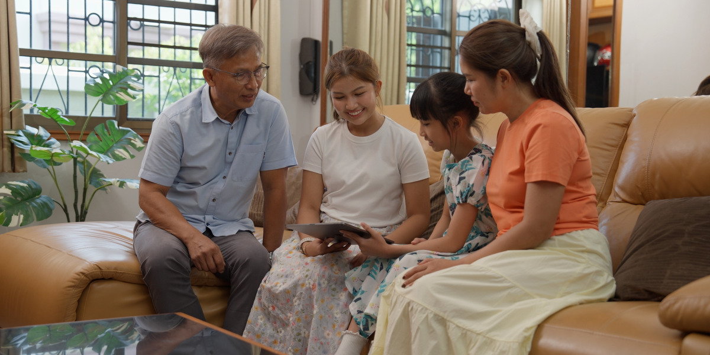

O texto da apostila, o vídeo em resumo com os minutos de cada parte, as três perguntas com o que se espera ouvir, perguntas de apoio e um comentário de reserva para cada uma. Também tem o roteiro dos 15 minutos. Tudo com o botão “de onde veio”.
7. Nossos donativos dão glória ao belo nome de Jeová (15 min) Consideração a ser feita por um ancião.
Os israelitas que não iam trabalhar diretamente na construção do templo tiveram a oportunidade de dar glória ao nome de Jeová por meio das suas generosas contribuições. (1 Crô. 29:8-10) Hoje, não conseguimos participar diretamente em todos os projetos da organização. Mas podemos apoiar esses projetos por meio dos nossos donativos. No jw.org encontramos atualizações que mostram como os nossos donativos ajudam a dar a glória que o nome de Jeová merece. (Sal. 96:8) Essas atualizações também nos motivam a louvar a Jeová por todas as coisas boas que ele está fazendo hoje e por nos permitir participar nelas. (1 Crô. 29:14-16; Isa. 12:5)
Mostre o VÍDEO Nossa Generosidade Dá Glória a Jeová. Depois, pergunte:
Para citar: Apostila Vida e Ministério de novembro-dezembro de 2026

O Corpo Governante agradece pelos donativos: eles “alegram o coração de Jeová” e “dão louvor ao nome dele”. O vídeo promete uma viagem pelo mundo para ver o que está sendo feito com eles, e o que alguns jovens sentem ao doar.
Uma irmã leu a carta de agradecimento de outubro de 2025 e soube que a Tradução do Novo Mundo saiu em tshwa, para os irmãos de Moçambique. Ela percebeu que “mesmo um donativo bem simples” pode alcançar “os quatro cantos da Terra”.
Quem doa de forma eletrônica recebe uma carta todo mês. Muitos gostam de revê-las na adoração em família. Elas mostram como o donativo está ligado à obra mundial.
Um menino separa parte da mesada e põe na caixinha de donativos do Salão do Reino e, às vezes, das assembleias. Quando visitou Betel e viu as novas exposições e o museu, entendeu que tudo aquilo existe por causa de donativos como os dele. “Isso fortaleceu muito a minha fé.” Lição para todos: não importa a idade.
Um irmão leu o artigo sobre como os donativos são usados na série de vídeos de Jesus e viu que o projeto é enorme. A série o ajuda a entender a relação especial entre Jeová e Jesus e a querer ficar mais perto deles. (A legenda chama a série de dois jeitos: “A História e o Ministério de Jesus”, aos 3:29, e “A Vida e o Ministério de Jesus”, aos 4:10.)
jw.org › Biblioteca › Séries de Artigos › “Como Seus Donativos São Usados”.
Davi também se sentiu privilegiado ao contribuir para a construção do templo (1 Crônicas 29:14). Todas as riquezas são de Jeová, mas ele nos dá o privilégio de contribuir. Os donativos voluntários “são atos de fé”, se tornam parte da adoração e dão louvor ao Pai.
“Todos nós agradecemos a Jeová pelo privilégio que temos de ser generosos com Aquele que nos deu todas as coisas.”
Para citar: Vídeo Nossa Generosidade Dá Glória a Jeová (jw.org)
Como nossos donativos dão louvor a Jeová?
O vídeo diz que os nossos donativos alegram o coração de Jeová e dão louvor ao nome dele. Eles ajudam a traduzir a Bíblia, a produzir vídeos e muito mais, e tudo isso dá glória ao nome de Jeová. E o que me tocou: Davi disse que tudo vem de Jeová. Então, quando damos, estamos devolvendo um pouco do que ele já nos deu.
Para citar: Vídeo Nossa Generosidade Dá Glória a Jeová (jw.org)
Para citar: A Sentinela de janeiro de 2018, página 18, parágrafo 4
Para citar: Estudo Perspicaz das Escrituras, volume 1, verbete “Dádivas, presentes”
Para citar: A Sentinela de janeiro de 2025, página 5, parágrafo 11
Como as atualizações da organização no jw.org e as cartas de agradecimento que você recebe têm te ajudado?
Gostei do que a irmã da Costa Rica contou. Ela leu a carta de agradecimento e soube que a Bíblia saiu num idioma de Moçambique. Aí ela entendeu que até um donativo pequeno vai longe. Isso também me anima: o que eu dou, mesmo pouco, faz parte da obra no mundo todo.
Para citar: Vídeo Nossa Generosidade Dá Glória a Jeová (jw.org)
Por quais projetos da organização você se sente especialmente grato?
Sou muito grato pela tradução da Bíblia. O vídeo mostrou a Bíblia saindo num idioma de Moçambique. Pense na alegria daqueles irmãos de ler a Palavra de Jeová na língua que eles entendem. E isso só acontece porque irmãos do mundo todo, como nós, fazem donativos.
Para citar: Vídeo Nossa Generosidade Dá Glória a Jeová (jw.org)
Resuma o texto da apostila e leia 1 Crônicas 29:9.
“Nem todo israelita podia trabalhar na construção do templo. Mas todos podiam dar glória a Jeová com as suas contribuições. E o versículo 9 diz como eles se sentiam: o povo se alegrou, porque fazia as ofertas voluntárias de pleno coração. Vamos ver como isso acontece hoje.”
Peça que deixem 1 Crônicas 29:14 aberto: o vídeo lê esse versículo no fim.
Uns 2 minutos para cada uma. A pergunta 2 é a mais pessoal: combine antes com um ou dois irmãos que leem as cartas de agradecimento em família.
No final da página inicial do JW Library, o ícone “Donativos”, ou donate.jw.org. Lá, em muitos países, há o documento Donativos para as Testemunhas de Jeová: Perguntas Frequentes (botão “Perguntas frequentes”). Para quem não usa tablet ou celular, lembre a caixinha de donativos do Salão, como faz o menino do vídeo.
“Como Davi disse, tudo vem das mãos de Jeová. Quando damos, devolvemos um pouco do que ele já nos deu, e o nome dele é louvado no mundo todo.”
O roteiro, as falas de introdução e fecho, as perguntas de apoio e os comentários de reserva são preparação pessoal.
Para citar: Vídeo Nossa Generosidade Dá Glória a Jeová (jw.org)
Para citar: Apostila Vida e Ministério de novembro-dezembro de 2026